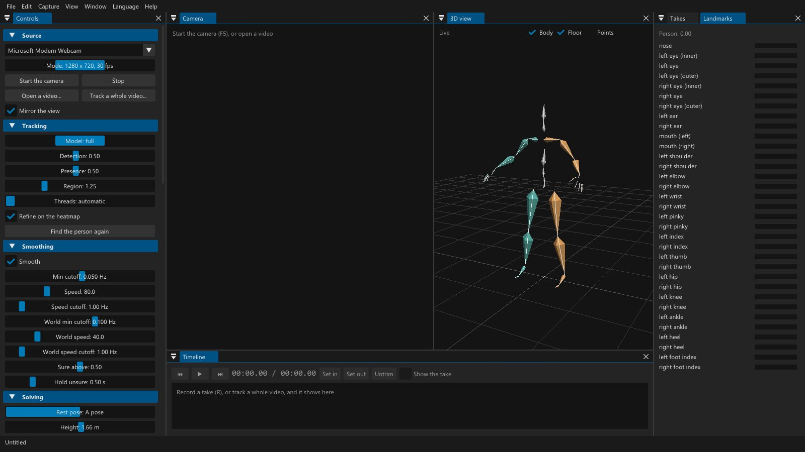

Your first take
Stand back from the webcam so it sees all of you, press F5 to start the camera and R to record. Trim the take on the timeline, smooth it, and export it from File as BVH, FBX or glTF. Or turn on the live link and move a character in Blender, Prometheus or Pygmalion as you move.
Minimum requirements
| System | Windows 10 or 11, 64-bit (Linux builds from source) |
|---|---|
| Processor | 64-bit (AVX2 recommended for pose tracking) |
| Memory | 4 GB RAM |
| Graphics | any card with OpenGL 3.0 or newer |
| Camera | any webcam (720p at 30 fps or better), or a video file |
| Disk | 200 MB, plus the pose models (downloaded on first start) |